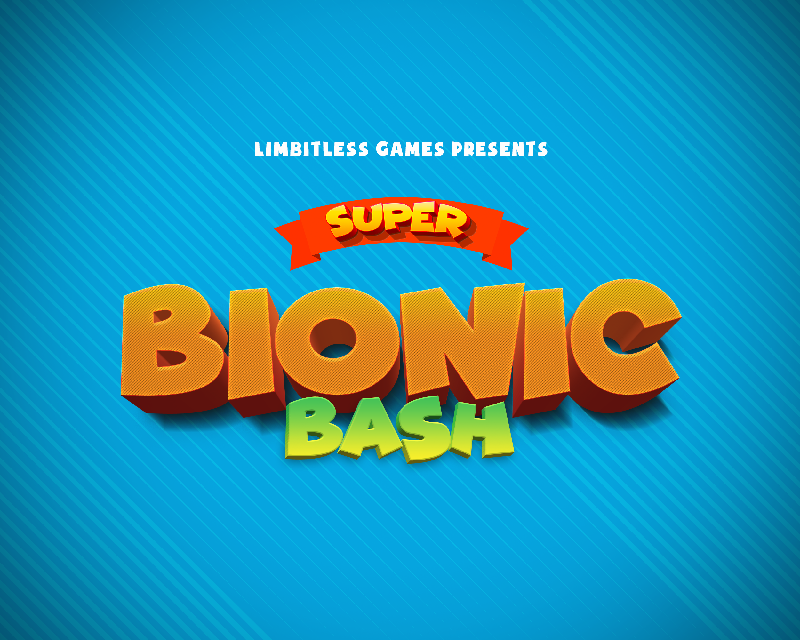
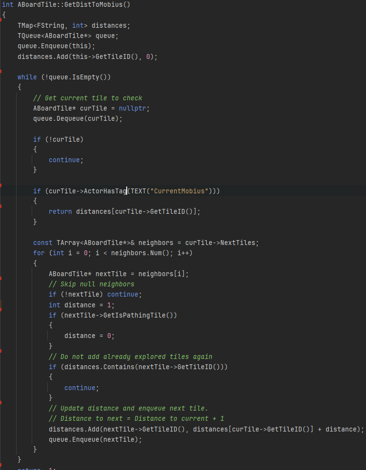
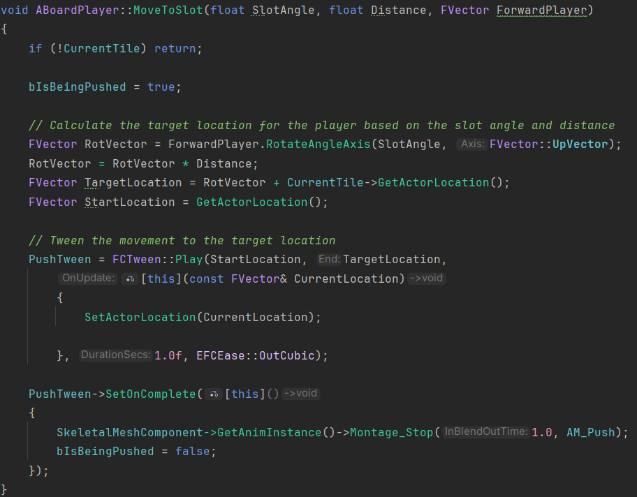
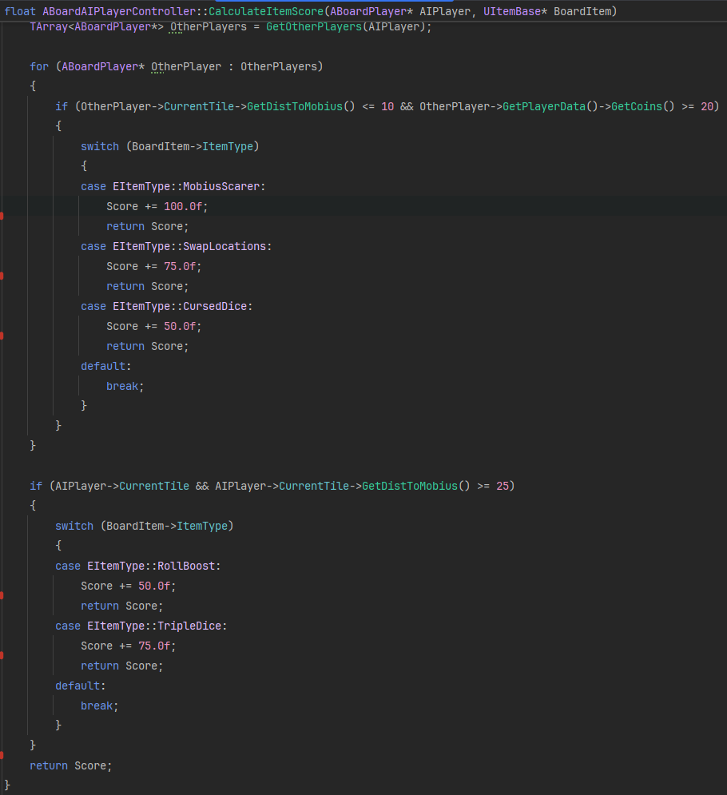
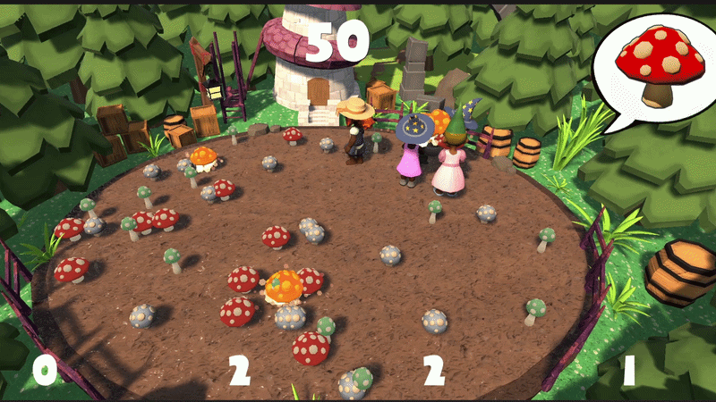

Super Bionic Bash is a multiplayer party game I am developing during my time at Limbitless Solutions. Limbitless creates bionic arms for children and uses video games as a training tool to help them learn how to operate their prosthetics. Using an electromyographic (EMG) armband that reads muscle signals, players can control their bionic arm and use it as a direct in-game controller.
I stepped up to manage the technical development as the lead game programmer, architecting the project's systems using C++ and Blueprints in Unreal Engine 5.
My core focus involves developing the AI controllers for NPC players, managing item systems, and polishing gameplay mechanics, alongside engineering many of the individual minigames within the broader Super Bionic Bash experience.
Gameplay Demo
Here is a look at the game in action and a few of the core mechanics I implemented:

Breadth-First Search (BFS) Pathfinding
This code demonstrates a breadth-first search algorithm used to find the distance to the 'mobius' objective from the player's current tile. This logic determines the optimal navigation path for AI players across the grid.

Vector Math & Collision Management
During development, I implemented several mathematical features to ensure smooth gameplay. Here is an example of utilizing forward vectors to dynamically move players when their paths cross, preventing them from clipping or phasing through each other.

Utility-Based AI System
To create more dynamic opponents, I engineered a Utility-based AI scoring system. This allows computer-controlled players to evaluate the current game state, prioritize their needs, and make intelligent, weighted decisions on the fly.

Minigame Implementation & Hardware Mapping
Here are two of the minigames I developed, both designed specifically around the EMG armband input. To translate the physical hardware data into interactive gameplay, I programmed the input logic to read the raw analog flex data (ranging from 0.0 to 1.0) and mapped it into action states so defining a "light flex" as 0.0 to 0.5 and a "heavy flex" as 0.5 to 1.0.
In Tower of Tony, players must use these calculated flex intensities to match the actions of the boss character. In Mushrooms for Toss, players use a sustained physical flex on the EMG controller to pick up and deliver the correct items to a moving target.

